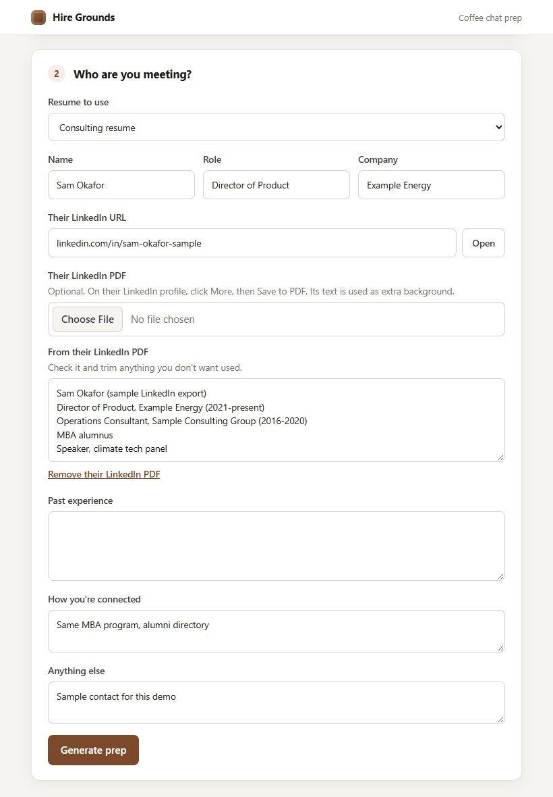
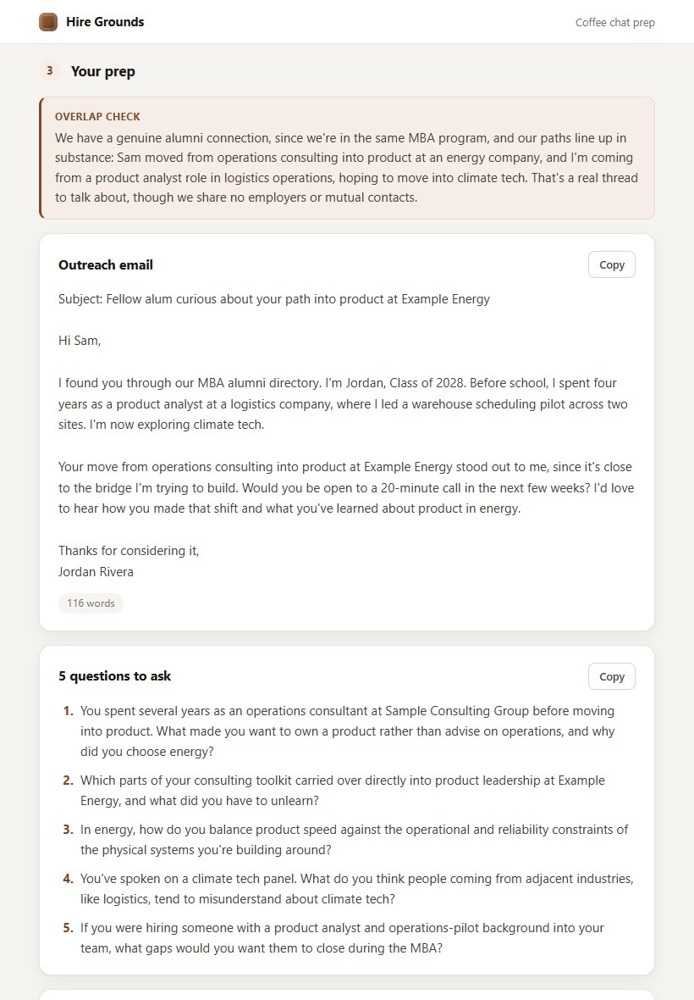

For NYU Stern MBA students recruiting for internships and full-time roles, this tool turns a resume and a contact’s background into a ready-to-send coffee chat request, tailored questions, and a personalized “tell me about yourself,” cutting about 30 minutes of prep per chat to about 5.
Current Status: Build 2: Local App
Demo: One full user action on my laptop with a real Claude call: choose a saved resume, add the contact and their LinkedIn PDF, and generate prep. Add the live cloud app URL in Build 5.


Who is this for? NYU Stern MBA students recruiting for either summer internships or full-time roles, juggling many coffee chats a week and looking at job applications. I'm one of them and I have access to dozens more in the class alone to test out the prototype.
The painful "Before" workflow: I track recruiting in two separate Google Sheets: 15 columns for networking and 18 for applications, all typed by hand. Before every coffee chat, I write a new outreach email, research the person, draft questions, and rework my “tell me about yourself” from scratch, which takes ~30 minutes per contact. Afterward, notes, thank-yous, and next steps add even more time as well.
The "After" workflow with this product: With this website, I upload my resume once. For each new contact, I paste their background, and in one sitting the tool gives me a personalized coffee chat request email built on our shared experience, five tailored questions to ask, and a 1-minute and 2-minute “tell me about yourself” angled to that person. Prep drops from 30–45 minutes to about 5, opening up more opportunity to follow what jobs are open and how to leverage previous coffee chats to get interviews.
Riskiest Assumption: Trust and accuracy. If the AI invents or stretches facts about me or the person I'm meeting, students won't trust what it writes and won't send it, and a made-up detail in a networking email can hurt a real relationship.
How this build tests it:
Simple Architecture: [Browser on my laptop: resume, stories, contact, LinkedIn PDFs] → [Local Node/Express server: reads PDFs, saves my profile in a local file, builds the prompt] → [Claude Opus 5.5 via the Claude API: returns a fixed JSON format] → [Overlap check, email, 5 questions, and 1- and 2-minute intros, each with a Copy button]
How it works: Everything runs on my laptop. My resumes and stories are saved in a local file that is never pushed to GitHub, and the API key stays on the server, never in the browser. Each "Generate" sends one request to Claude with strict fact rules, and the server checks that the email is under 120 words and asks Claude to shorten it if not. PostHog records pageviews, clicks, and session replays with all text and inputs masked.
Cost per run: about $0.05 to $0.06 with Claude Opus 5.5 (Nov 14: 1,515 input and 2,180 output tokens, about $0.05). Switching to Claude Haiku would cut that to under $0.01 if quality holds.